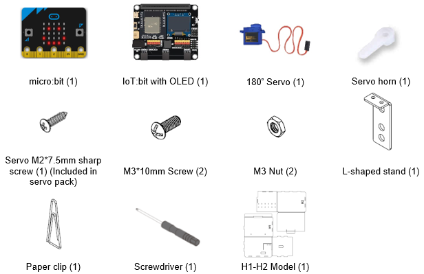
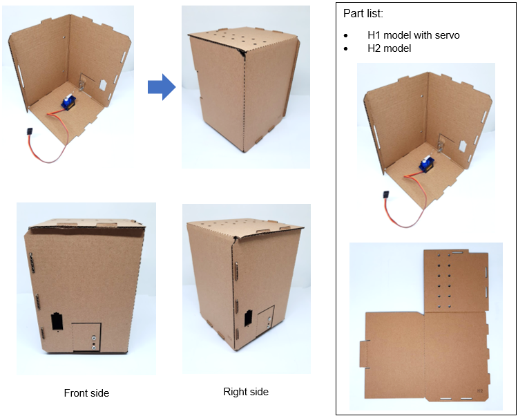
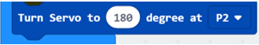
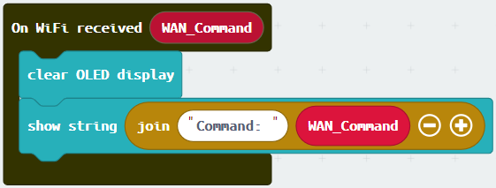
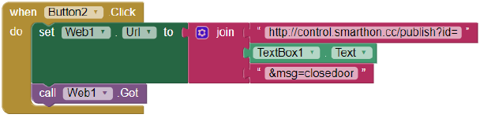
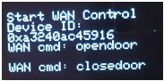
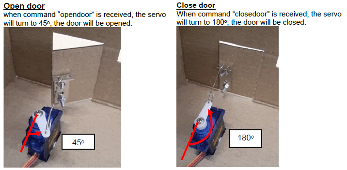

18. IoT Case 09: Smart House door control¶
Level: 
18.2. Background¶
What is app inventor?
App Inventor allows user to develop their own app for Android phones by simple programming and design work.
Smart House door operation
When the micro:bit receives the signal “opendoor” from the app, the 180o servo will turn for 180o to open the door. When the micro:bit receives the signal “closedoor” from the app, the 180o servo will turn back 180o to close the door.
18.3. Part List¶
Electronics:
|
Model:
|
Equipment:
|

18.4. Practical operation¶
Step 1
Attach the L-shaped stand with paper clip to the model H1
Step 2
Straighten the paper clip and cut it to 6.5 cm
Step 3
Use pilers to fix the paper clip into the L-shaped stand

Step 4
Make a small hole to fix into the stand securely

Step 5
Attach the servo to the model H1

Step 6
Put together all the cardboard parts (H1-H2)

18.5. Hardware connect¶
Connect the 180ᵒ servo to P2 port of IoT:bit
| Micro:bit P2 | Servo |
|---|---|
| S (yellow) | S (orange) |
| V (red) | V (red) |
| G (black) | G (brown) |

18.6. Programming (MakeCode)¶
Step 1
Drag on start block from Basic. Drag Initialize IoT:bit at OLED from IoT:bit, set OLED height:64, width:128. Set WiFi to ssid “wifi_name” and pwd “WiFi_password”.

Step 2
Turn servo to 180 degree at P2 from Smartcity.

Step 3
Drag On WiFi connected and start WiFi remote control (WAN) from IoT:bit.

Step 4
Drag on WAN command received (WAN_Command) from IoT:bit.
If WAN_Command = opendoor then, turn servo to 45 degree at P2 from Smartcity.

Step 5
Else if WAN_Command = closedoor then, turn servo to 180 degree at P2 from Smartcity.

Full Solution
MakeCode: https://makecode.microbit.org/_L2V0LeAHo0hg
You could also download the program from the following website:
18.7. (IoT (App Inventor)¶
* For more details, please refer to “Chapter 3: Control your micro:bit by App Inventor 2”.
Step 1
Create the page with the components
On Designer:
Drag the components from the left menu – we will need buttons to open or close the door and a textbox for input the Device ID number.
Also, add the invisible component “Web” under connectivity, we will need it for WAN connection.

Step 2
Make the programming part
On Blocks:
The WAN control command URL is: http://control.smarthon.cc/publish?id=DeviceID&msg=ControlCommand
When Button1 is clicked, it will direct to the URL with given device ID and command “opendoor”.

When Button2 is clicked, it will direct to the URL with given device ID and command “closedoor”. 
Download the App in your phone to by .apk or scan QR code.

18.8. Result¶
Input your device ID number in the textbox, then click button “opendoor” to send command “opendoor”. Click button “Close Door” to send command “closedoor”.

Micro:bit will wait for WAN command:


With app inventor and micro:bit, you can control the door open/close by mobile app!

18.9. Think¶
Q1. How can we add password authentication to open the door?
Q2. We can install the servo to different position in the house (tips: modify the turning angle of the servo)